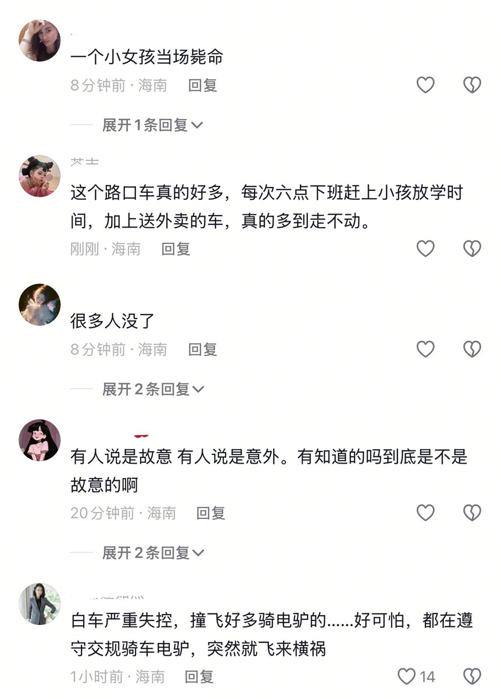

担麦人
@xccpma
@whyyoutouzhele 《我生活压力也很大的》《这减速带怎么软绵绵的》《你跟法医说去吧》

李老师不是你老师
@whyyoutouzhele
4月16日下午，海南三亚。金鸡岭街发生一起厢式货车沿街冲撞行人车辆事件。视频显示，现场一片狼藉。有大人小孩倒地不起，拍摄者称“从这边一路撞过来，这里也撞了七八个人”另一名拍摄者称“压死很多人”据当地居民称，事发时正处于放学时间段。 https://t.co/yLuSmDp4IU